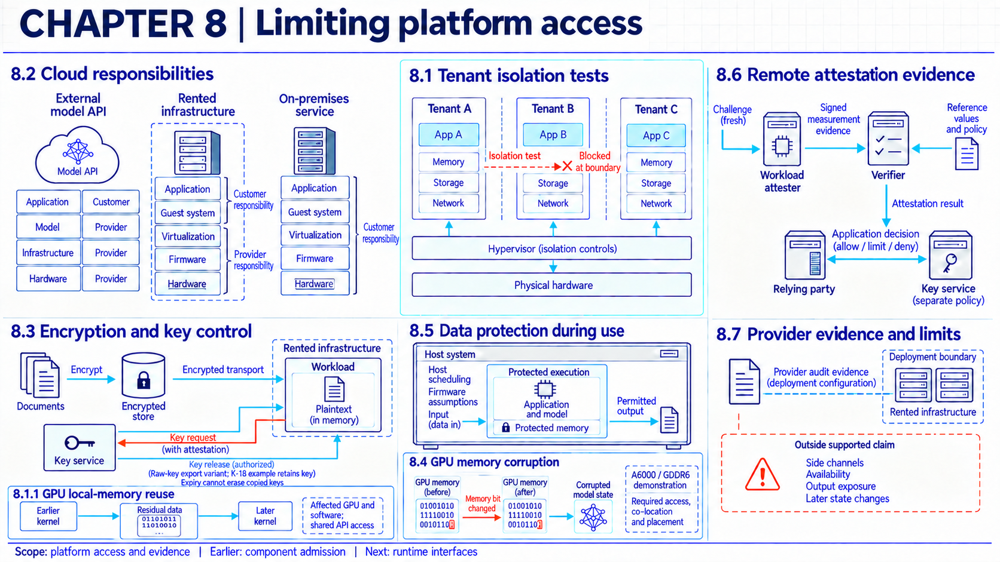
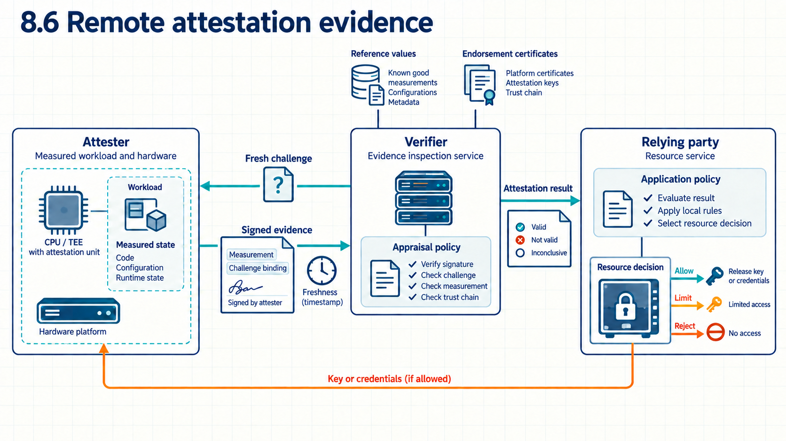

8 Isolation failures during execution
Data processed by an AI service can be exposed or altered through the platform on which it runs.

An approved model can still process private data on a platform that exposes them. Another tenant’s process may reach across a workload boundary, a privileged host component may inspect memory the workload cannot hide, or state left behind in shared memory may become readable to whoever runs next. Tenant controls limit what another workload can reach. Key custody identifies who can use decryption keys, while plaintext may also exist in the application or its logs. Attestation supplies evidence about specified platform claims at a measurement time. Each answers a different question, so a passing result from one cannot substitute for the others.
Assume the organization operates its model workload on rented infrastructure. The provider operates the hardware and firmware beneath that workload, and the deployment record states who operates each layer before runtime access is configured. The organization can inspect only its own workload records and whatever platform evidence the provider supplies, not the provider’s administrators, firmware internals, or other tenants. A provider-operated model API is the contrasting arrangement used for comparison below. There the provider operates the model service and its platform, while the organization may still operate the calling application, user identities and credentials, context assembly, and transfer policy.
8.1 Access from other workloads
An evaluation job can run beside jobs belonging to strangers, and a submitted script may itself process hostile input. The first boundary to test is therefore the one between workloads sharing a platform.
Tenant isolation is that separation across compute, memory, storage, network, and management paths. A container normally isolates processes while sharing the host operating-system kernel. A virtual machine runs a separate guest operating system behind a hypervisor-managed boundary instead, with the hypervisor mediating CPU, memory, devices, storage, and networking. These labels identify different enforcing mechanisms. Neither proves that the deployed tenant boundary blocks every cross-workload path. The result for a virtualized boundary depends on the exact hypervisor, privileged management components, device-assignment mode, configuration, and patch state.1 Within a workload, execution isolation limits the processes, files, devices, memory, and network resources the workload can affect. A host mount exposes host storage inside a workload, and a privilege is an allowed operation that exceeds ordinary process access.
NIST container guidance states that containers share a kernel and identifies risks around containers, hosts, images, registries, and orchestrators.2 It recommends layered isolation with application-aware network controls rather than simple host separation alone.3 The same guidance names insecure defaults, excessive privileges, host file access, runtime vulnerabilities, and shared-kernel exposure as container risk classes, and recommends separating workloads by sensitivity while constraining privileges, host access, and network access.4 Those controls reduce paths without establishing complete containment, especially with a shared kernel. The long-standing least-privilege principle behind them holds that each workload should receive only the rights its task needs.5
No single component draws the whole boundary. The hypervisor, the container runtime, the storage service, and the network policy each own part of it: tenant identities gate cross-tenant access, memory and storage objects carry ownership, routes decide what network paths exist, and management permissions decide who may reconfigure any of it. One common arrangement runs the workload as a restricted user with limited capabilities, then narrows further through approved mounts, device access, network policy, and resource limits. Passthrough devices and management paths need their own evidence rather than inheriting the container or VM claim. Agent-generated commands run under these same controls when the task calls for executing model-produced code. The record of what that particular task was allowed belongs to the agent sequence discussion in agent environments (Chapter 13).
A tenant-separation trial seeds cross-tenant attempts that the policy should deny alongside permitted accesses it should allow, keeping blocked attempts over all seeded attempts next to successful permitted accesses over all controls. Stronger separation costs sharing: dedicated boundaries consume memory and startup time, reduce accelerator sharing, and can limit accelerator access. The trial stays bounded by what it attempted. A host flaw, residual device state of the kind examined below, or a management path outside the test can carry access past the tested rules, and passing says nothing about accelerator or provider properties the trial never exercised.
Example
Testing mount and privilege boundaries. Suppose reviewers execute a generated analysis script that reads the mounted repository, then reaches for a host secret and requests an added privilege. The reference policy allows reads under /workspace with ordinary processes only. The worker opens /workspace/input.csv successfully, the open of /host-secret returns access denied, and the privilege request is denied as well before the job exits after writing its ordinary result.
Conclusion. The tested mount and privilege controls held for these two attempts. The run says nothing about the shared kernel or runtime having no other escape path.
Residual GPU data creates a different cross-workload confidentiality path. In the 2024 LeftoverLocals work, uninitialized GPU local memory remained readable across kernel invocations on tested hardware and software stacks. An attacker with access to a shared programmable GPU interface could observe data another kernel left in that region.6 CERT/CC tracks the issue as VU#446598 and CVE-2023-4969 with vendor-specific status, not as a finding about every GPU or memory region.7 The claim therefore specifies the local-memory region, the kernel-to-kernel reuse event, the attacker’s GPU API access, and the tested GPU, operating system, driver, and firmware. Volatile local-memory clearing and storage-media sanitization are separate controls.
Clearing is a control to verify. The evidence must identify the exact mitigation, whether it is enabled by default, the event that triggers it, its order relative to the next workload, and how completion is observed. AMD’s bulletin describes an administrator-enabled mode on supported products that prevents concurrent GPU processes and clears registers between processes, with possible performance effects.8 That statement supplies conditions for those supported products. It does not establish a universal register-clearing property.
Example
Testing GPU local-memory reuse. Suppose reviewers specify the GPU, driver, runtime, and scheduling configuration for a controlled test. In this setup, a first tenant’s kernel writes a known pattern into a specified local-memory region and reads it back to confirm that the test can detect the pattern. The scheduler then runs a second tenant’s listener kernel immediately afterward on the same tested compute path, using a recorded order and no unrecorded intervening work. The policy blocks the second tenant from reading any byte of the first tenant’s pattern.
If the listener detects the pattern, the test has observed a cross-tenant confidentiality failure. If it does not, the result is only non-detection for the tested region, order, device, driver, runtime, and scan coverage. It does not prove that clearing occurred or that other regions and schedules are safe.
8.2 Access by platform administrators
Ordinary container and virtual-machine isolation relies on privileged platform components. Administrators who can change hardware, firmware, virtualization, storage, networks, or identity policy may have access beyond the tenant’s process-level rules. Confidential-computing designs try to reduce some of those paths under specific assumptions.
Shared responsibility divides security duties between customer and provider. The control plane manages resources, identities, and configuration, and administrative access is the authority to change or inspect those layers.
NCSC guidance states that modern AI systems commonly combine software, data, models, and remote services from several parties, which makes security responsibility harder for users to inspect.9 Zero-trust guidance removes implicit trust based only on network location, affiliation, or ownership and focuses access decisions on resources, while still depending on administrators, hardware, identity systems, and policy enforcement.10
The administrative threat depends on who can change the host, hypervisor, firmware, device assignment, storage, network, verifier policy, reference values, and key service. Ordinary containers and VMs leave host, hypervisor, device, storage, network, and management administrators inside the trust boundary. A confidential VM can reduce some normal administrative read paths, but only under the specific hardware and software threat model selected for that deployment. Rented infrastructure alone does not protect plaintext from provider administrators.11 Which duties the provider claims and which stay with the customer still comes from the provider’s own statements, not from the arrangement label.12
Example
Comparing three arrangements. Suppose reviewers place the same inference task behind an external model API, on rented infrastructure, and on premises, listing every layer from hardware through identity. With the external model API, the provider operates the model service and its platform; the organization operates the calling application, user identities and credentials, and transfer policy in this example. On rented infrastructure the organization also operates the guest system and model service. On premises it additionally operates hardware and firmware, although suppliers still provide components and updates.
Conclusion. No arrangement leaves zero external trust. The comparison shows where each administrator path sits rather than eliminating any of them.
8.2.1 Encryption and key access
Encryption claims specify the data state and the key holder. Data at rest is stored, data in transit moves between endpoints, and data in use is being processed in memory. Key custody identifies which party or component can use or release a cryptographic key. NIST key-management guidance treats generation, distribution, storage, use, backup, recovery, revocation, and destruction as managed lifecycle functions, without establishing that a provider lacks access to plaintext or keys.13
The concrete design used here keeps document key K-18 inside a key service. To open a five-minute decryption session for workload W-4, the service checks current workload identity, current authorization for document D-18, the requested purpose against that authorization, and an acceptable appraisal result. It checks authorization again for each decrypt request during the session and rejects new requests after the deadline. The gate checks each requested decryption against identity, authorization, purpose, appraisal, and deadline. It cannot enforce the later purpose of plaintext already returned. This design does not export raw key bytes. If another design does export them, expiry at the service cannot erase copied key material. Zero-trust guidance supports authentication and authorization before a session to an enterprise resource, but does not specify this confidential-computing protocol.14
Example
Tracing a denied decryption session. Suppose inference runs on rented infrastructure and workload W-4 requests a five-minute session for document D-18. The key service confirms identity and current document authorization and checks the requested purpose against that authorization, but receives no acceptable appraisal result. It denies the session, records each checked input, and does not decrypt the document.
Conclusion. The gate denied this path while the document remained encrypted. It says nothing about an alternate decryption path, copied key material in a different design, or plaintext retained after a permitted decryption.
Short sessions and repeated appraisal add latency and availability risk, while operating more layers directly costs patching and on-call effort and operating fewer leaves less direct evidence. The release check stays bounded by its inputs. An alternate decryption path, a copied session credential, plaintext retained in process or GPU memory, output, or logs, or an incorrectly bound identity can carry access beyond the gate.
8.3 Corruption of working memory
Even with tenants separated and keys controlled, hardware faults can corrupt a workload’s active state. Working memory here means the parameters, inputs, and intermediate values a workload holds while it runs.
GPUHammer, presented at USENIX Security 2025, demonstrated an integrity attack on an NVIDIA A6000 with GDDR6 under the paper’s attacker access, co-location, and placement conditions.15 Rowhammer is a hardware fault mechanism in which repeatedly accessing DRAM rows can induce bit flips in nearby rows. The study produced such bit flips and showed model damage on its tested setup. It does not establish that every GPU is vulnerable, and its reported accuracy change does not predict operational harm elsewhere. Error-correcting code (ECC) memory adds redundant information so that specified memory errors can be detected or corrected. NVIDIA’s July 2025 notice states that enabling system-level ECC mitigates the reported A6000 problem; that vendor response applies to the reported problem and platform, not GPU Rowhammer as a class.16
The platform record for this risk specifies the GPU and memory type, ECC mode, firmware and driver, attacker execution access, co-location condition, observed fault, and integrity check. A clean result on another device is evidence only for that tested setup and workload. It is not a universal hardware guarantee.
8.4 Gaps in protected execution
Data-in-use protection rests on a smaller boundary than the whole provider. Its claim therefore names where the protected area ends and what remains outside it.
A trusted execution environment (TEE) is a protected execution area whose isolation and measured state form part of the security claim. A root of trust is a component accepted as a starting point for measurement or verification. The RATS architecture separates the target environment from the environment that collects evidence about it and requires claims to stay securely associated with the target; it is an informational architecture for evidence relationships, not a definition or guarantee of TEE isolation.17
Confidential-computing evidence has two levels. The Confidential Computing Consortium analysis supplies a general goal and threat-model limits and explicitly rejects absolute security.18 The exact CPU TEE, GPU mode, firmware, device assignment, attestation evidence, and key-release path must come from vendor and deployment documentation. Implementation assurance and current patch status remain specific to the deployed system.
Assessing a TEE requires its protected memory and execution boundary, excluded interfaces, trusted firmware, update process, measurement method, and relation to key release. An admission policy can require matching workload and firmware measurements and approved interfaces before making plaintext available. The result depends on what the selected platform actually measures and enforces. The host administrator sits outside the claimed area yet still controls scheduling, so denial of service stays possible, and model outputs with allowed logs leave through explicit interfaces that the boundary record must name. A confidential VM alone does not extend that protection to an accelerator. The complete protected path names the supported CPU TEE, the supported GPU model and confidential mode, guest and host software, firmware, the passthrough arrangement, I/O protection, CPU and GPU evidence, verifier policy, and key release as one versioned design. NVIDIA’s confidential-containers reference design describes CPU and GPU attestation with Kata utility VMs and Trustee-based key release, together with its own security limits. It is versioned vendor documentation rather than a general guarantee.19 Its living supported-platform matrix supplies the combinations claimed by a selected version, so the deployment record includes the matrix version and matching components.20 Items crossing the boundary need their own record: environment variables, ConfigMaps, mounted storage, network traffic, outputs, logs, and application code can remain untrusted, exposed, or able to disclose protected data, and composite attestation does not make those paths safe by itself.
Example
Tracing a protected-execution boundary. Suppose reviewers must state what they would verify before placing document plaintext inside a protected area. Their record specifies the workload image, the protected memory range, the entry and exit interfaces, the firmware version, the measurement method, and the key-release path. The host administrator is outside the claimed area but still schedules the workload and can stop it. Model output and allowed logs depart through the listed interfaces.
Conclusion. The record identifies the claimed boundary and the evidence inputs checked before admission. It does not establish actual isolation, future state, side-channel resistance, availability, output confidentiality, or properties of unlisted firmware.
Timing, resource use, traffic shape, and shared hardware can leak information through side channels even when protected memory works as specified. Returning software to an earlier version can reintroduce defects the appraisal assumed fixed. Malicious or unmeasured firmware, an unmeasured device, or a defect in the trusted base can undercut the measurement the claim rests on. A platform statement therefore needs to place each of these inside or outside its threat model, name the mitigations it tested, and leave the rest as open review items. Protected execution also narrows hardware choice, reduces observability, and adds cost.
8.5 Evidence of platform protection

A customer deciding at a distance whether to release data or keys can use cryptographic evidence about specified platform state instead of relying on broad assurance. In the decryption-session example, the key service requires acceptable evidence about the workload and platform before opening the session. Remote attestation is that evidence flow: an attester produces evidence about an environment, a verifier appraises it against policy, and a relying party uses the result for an application decision.21 Freshness is the policy-dependent limit on how old that evidence may be, with the warning that state can change immediately after evidence is produced.22
The verifier authenticates and appraises specified evidence against reference values and policy. The relying party then checks whether the resulting claims satisfy its release policy. A successful result supports only the listed claims under the accepted evidence, endorsements, reference values, freshness method, policy, and roots of trust. The architecture leaves evidence format, trust anchors, policy, and protected workload to each deployed system, so a nonce (a one-use value), signature, or key-binding property belongs to the selected evidence protocol rather than to attestation in general. It also states that the architecture alone cannot show whether a deployed system mitigates its threats, allows one entity to combine roles, and requires the design to assess the consequences of doing so.23 An appraisal result is further limited to the claims, policies, and accepted trust anchors the verifier actually used.24
Example
Following an attestation-gated decryption flow. Suppose raw document key K-18 remains inside the key service and approved workload W-4 requests a five-minute decryption session. In this example’s selected protocol, the verifier sends a fresh challenge and receives signed evidence associating that challenge with claims about the measured environment and workload. It checks the signature and freshness, compares the measurement with approved reference R-12, and applies policy version 5. The relying party checks the appraisal result and current document authorization, then opens the session at 10:03. During the session, W-4 sends an authorized decryption request and receives plaintext rather than raw key bytes. The retained records are the challenge, evidence, reference, policy, appraisal result, authorization decision, session decision, decrypt request, and output.
Conclusion. The session-opening decision was conditioned on one appraisal result and a current authorization check. The records do not establish future state, later plaintext use, or properties outside the measured boundary.
Trials of this flow seed approved, stale, and altered states, reporting accepted approved states alongside rejected stale or altered ones over all seeded cases. The machinery costs service dependencies, latency, reference-value maintenance, and a possible availability failure when the verifier cannot be reached. A compromised trust anchor, a rollback the policy accepts, or a state change after evidence collection can defeat the intended condition, while a valid appraisal still supports only the measured claim under the accepted roots of trust. The five-minute session is an assumed local design. Its deadline prevents new requests through that session; it does not erase plaintext, session credentials, logs, outputs, or raw key bytes exported by a different design.
Confidential computing and attestation do not fix application defects, authorize model actions, show that a model is harmless, validate output accuracy, protect every output or log, or guarantee availability. Approved measurements can identify approved bits or configuration claims. They do not establish that the approved model or code behaves safely. NVIDIA’s threat model for its confidential-computing VM design excludes malicious or vulnerable guest code, application logging, compromised attestation or key-release administration, side channels, physical attacks, and denial of service.25
8.5.1 Scope of provider evidence
Provider paperwork gets the same scoping treatment. An audit scope states the systems, controls, locations, and time period examined, and NCSC guidance asks providers to state which security aspects remain the user’s responsibility and where data may be used, accessed, or stored.26 A certificate or audit report therefore covers only its stated claim; a broad certificate, an expired report, or a configuration outside the examined scope creates false confidence if read as general proof. Deeper supplier evidence costs review time and may not be contractually available, so the deployment owner accepts, restricts, or rejects the platform after matching the evidence to the exact configuration and period, retaining unknowns as unknowns rather than assuming protection.
The platform record feeds the chapters that follow: release testing in release decisions (Chapter 14), live observation in system monitoring (Chapter 15), and incident recovery in recovery (Chapter 16). Placement choices use it in deployment choice (Chapter 19) and supplier duties continue in supplier responsibilities (Chapter 21). Reachable service interfaces are examined next in service exposure (Chapter 09).
Note
Chapter checkpoint. A rented-infrastructure model must read an encrypted document. The provider operates the hardware and firmware. The organization operates the workload and key policy. Which evidence flow can gate key release, and which claims stay open?
Answer. Record the workload and environment measurement, a fresh challenge, attester evidence, verifier trust anchors, approved reference values, appraisal policy and result, current document authorization, and the relying party’s session decision. In this design, the key service retains the raw key and opens a five-minute decryption session for the approved workload, checking authorization again for each request. Expiry blocks new decrypt requests through that session. It does not erase returned plaintext or copied session credentials. The flow can support the tested gate decision under the stated roots of trust. It does not establish the protected area’s isolation, later plaintext purpose, side-channel resistance, availability, output confidentiality, or future state.
Starter literature. These sources provide the initial evidence base for the chapter and guide later research, but they do not support every claim by themselves. 27 28
Ramaswamy Chandramouli, Security Recommendations for Server-based Hypervisor Platforms, NIST SP 800-125A Rev. 1 (2018), abstract and Sections 1.1, 2, and 2.2.2 on baseline functions, threat sources, and device virtualization, source. Checked September 16, 2026. Server-hypervisor guidance describing responsibilities and recommendations, not assurance for a named cloud or version.↩︎
Murugiah Souppaya, John Morello, and Karen Scarfone, Application Container Security Guide, NIST SP 800-190 (2017), Sections 2.2 and 3, especially Section 3.5.2, source. Checked September 16, 2026.↩︎
Murugiah Souppaya, John Morello, and Karen Scarfone, Application Container Security Guide, NIST SP 800-190 (2017), Sections 4.3.4 and 4.4.2, printed pp. 23-25, source. Checked September 16, 2026.↩︎
Murugiah Souppaya, John Morello, and Karen Scarfone, Application Container Security Guide, NIST SP 800-190 (2017), Sections 3.3-3.5, printed pp. 15-18, source. Checked September 16, 2026.↩︎
Jerome H. Saltzer and Michael D. Schroeder (1975), “The Protection of Information in Computer Systems,” Proceedings of the IEEE 63(9), 1278-1308, section I.A.3, “Design Principles,” item f, “Least privilege,” source. Checked 2026-09-16.↩︎
Heidy Khlaaf and Tyler Sorensen, “LeftoverLocals: Listening to LLM Responses through Leaked GPU Local Memory,” Trail of Bits blog, January 16, 2024, exploit brief, testing across GPU platforms, and coordinated disclosure, source. Checked September 16, 2026. Recovery from uninitialized GPU local memory on tested combinations with attacker access to a shared programmable GPU interface. Vendor and patch status are device and software specific.↩︎
CERT/CC, VU#446598, “GPU kernel implementations susceptible to memory leak” (CVE-2023-4969), overview and vendor information, source. Checked September 16, 2026. Tracks tested vendor status. It is not evidence that every GPU or memory region is affected.↩︎
AMD, AMD-SB-6010, “GPU Memory Leaks,” CVE details and mitigation, source. Checked September 16, 2026. The supported-product mitigation requires an administrator-enabled mode that prevents concurrent GPU processes and clears registers between processes. Performance can be affected.↩︎
UK National Cyber Security Centre, CISA, and international partners, Guidelines for Secure AI System Development, version 1.0 (2023), Introduction, “Who is responsible for developing secure AI?” PDF p. 7, source. Checked September 16, 2026.↩︎
Scott Rose, Oliver Borchert, Stu Mitchell, and Sean Connelly, Zero Trust Architecture, NIST SP 800-207 (2020), abstract and Section 2.1, “Tenets of Zero Trust,” source. Checked September 16, 2026.↩︎
Confidential Computing Consortium, A Technical Analysis of Confidential Computing, v1.3, updated November 2022, Section 5, “Threat Model,” source. Checked September 16, 2026. General industry analysis that rejects absolute security. Assurance depends on the attacker and the deployment trust model.↩︎
UK National Cyber Security Centre, CISA, and international partners, Guidelines for Secure AI System Development, version 1.0 (2023), Secure deployment, “Make it easy for users to do the right things,” PDF p. 15, source. Checked September 16, 2026.↩︎
Elaine Barker, Recommendation for Key Management: Part 1, General, NIST SP 800-57 Part 1 Rev. 5 (2020), Sections 5-8, especially Section 8, source. Checked September 16, 2026.↩︎
Scott Rose, Oliver Borchert, Stu Mitchell, and Sean Connelly, Zero Trust Architecture, NIST SP 800-207 (2020), abstract and Section 2.1, source. Checked September 16, 2026.↩︎
Chris S. Lin, Joyce Qu, and Gururaj Saileshwar, “GPUHammer: Rowhammer Attacks on GPU Memories are Practical,” Proceedings of the Thirty-fourth USENIX Security Symposium (2025), abstract, threat model, and evaluation, source. Checked September 16, 2026. Demonstrated Rowhammer bit flips on an NVIDIA A6000 with GDDR6 under the paper’s co-location and attacker conditions; a bounded integrity example, not a claim about every GPU.↩︎
NVIDIA, Security Notice on Rowhammer, July 2025, notice summary and mitigation, source. Checked September 16, 2026. Vendor response to the reported A6000 result; system-level ECC mitigation is specific to that problem and platform, not a universal closure of GPU Rowhammer.↩︎
Henk Birkholz, Dave Thaler, Michael Richardson, Ned Smith, and Wei Pan, Remote ATtestation procedureS (RATS) Architecture, IETF RFC 9334 (January 2023), Sections 3.1, 4.1, and 8.1, source. Checked September 16, 2026. This is an Informational architecture, not a TEE isolation guarantee.↩︎
Confidential Computing Consortium, A Technical Analysis of Confidential Computing, v1.3, updated November 2022, Section 5, “Threat Model,” source. Checked September 16, 2026. General industry analysis that rejects absolute security. Assurance depends on the attacker and the deployment trust model.↩︎
NVIDIA, Confidential Containers Reference Architecture, architecture overview and security considerations (living documentation), source. Checked September 16, 2026. Versioned vendor design describing CPU and GPU attestation, Kata utility VMs, and Trustee-based key release; its own limits cover application defects, some control-plane inputs, unsafe storage mounts, most physical attacks, and availability.↩︎
NVIDIA, Confidential Containers: Supported Platforms and Software Components, supported-platform matrix and GPU passthrough requirements (living documentation), source. Checked September 16, 2026. Recheck for the selected version at drafting and deployment time.↩︎
Henk Birkholz, Dave Thaler, Michael Richardson, Ned Smith, and Wei Pan, Remote ATtestation procedureS (RATS) Architecture, IETF RFC 9334 (January 2023), Sections 3 and 4.1, source. Checked September 16, 2026.↩︎
Henk Birkholz, Dave Thaler, Michael Richardson, Ned Smith, and Wei Pan, Remote ATtestation procedureS (RATS) Architecture, IETF RFC 9334 (January 2023), Section 10, “Freshness,” source. Checked September 16, 2026.↩︎
Henk Birkholz, Dave Thaler, Michael Richardson, Ned Smith, and Wei Pan, Remote ATtestation procedureS (RATS) Architecture, IETF RFC 9334 (January 2023), Section 12, especially Section 12.2, source. Checked September 16, 2026.↩︎
Henk Birkholz, Dave Thaler, Michael Richardson, Ned Smith, and Wei Pan, Remote ATtestation procedureS (RATS) Architecture, IETF RFC 9334 (January 2023), Sections 8-12, especially Sections 10 and 12.2, source. Checked September 16, 2026. The RFC defines attestation roles and evidence flow. It does not certify a TEE or claim that attestation prevents side channels.↩︎
NVIDIA, Confidential Computing reference architecture, “Trust and Threat Model,” responsibility table and what the design does and does not protect against, source. Checked September 16, 2026. First-party design claim excluding malicious or vulnerable guest code, application logging, compromised attestation or key-release administration, side channels, physical attacks, and denial of service.↩︎
UK National Cyber Security Centre, CISA, and international partners, Guidelines for Secure AI System Development, version 1.0 (2023), Secure deployment, “Make it easy for users to do the right things,” PDF p. 15, source. Checked September 16, 2026.↩︎
Scott Rose, Oliver Borchert, Stu Mitchell, and Sean Connelly, Zero Trust Architecture, NIST SP 800-207 (2020), abstract and Section 2.1, source. Checked September 16, 2026. Relevant topics: resource access, identity, and the absence of implicit trust based only on network location.↩︎
UK National Cyber Security Centre, CISA, and international partners, Guidelines for Secure AI System Development, version 1.0 (2023), Introduction and “Make it easy for users to do the right things,” PDF pp. 7 and 15, source. Checked September 16, 2026. Relevant topics: supplier and customer responsibilities and data handling.↩︎